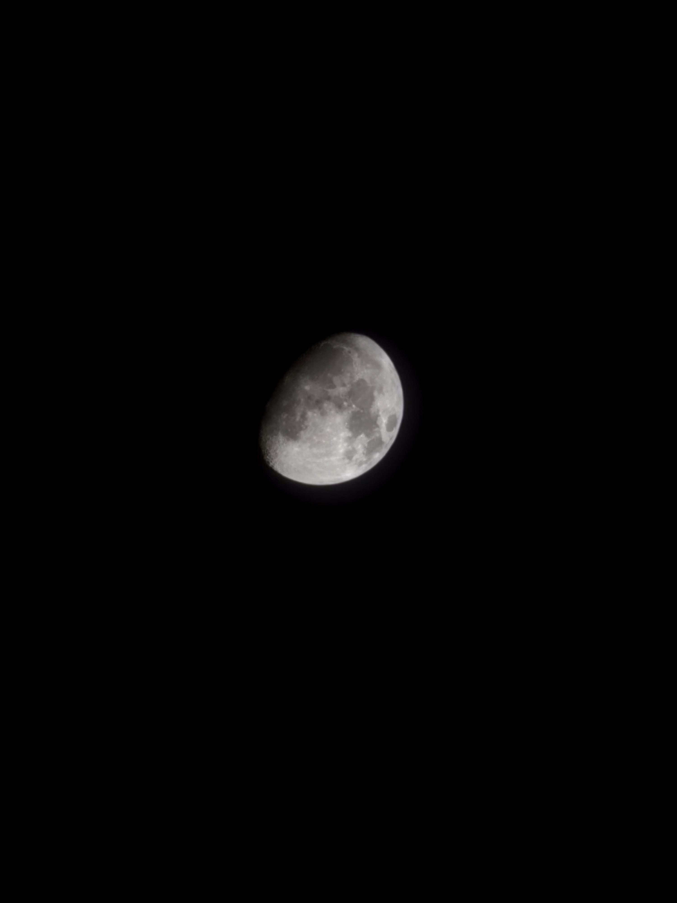

Short Biography
I'm Rama, a learner, love to travel
I love to travel because in every journey, I can find new experiences and insights that enrich my perspective on life.
Education History
- Undergraduate of Jakarta State University - Jakarta State University (2024 - now)
- PM Darussalam - Ponorogo - Jawa Timur (2016 - 2023)
List of Awards
| Year | Award | Place |
|---|---|---|
| 2021 | Kasyfu-l-Mu'jam Competition | 1st Place |
| 2021 | Kasyfu-l-Mu'jam Mufahros Competition | 1st Place |
| 2020 | Syarhu-l-Ahkam Al-Furu'iyyah 'Inda Al-Madzahib | 2nd Place |
Self-Reflection
In every journey, I found that what we see isn't always what we think it is. This realization has encouraged me to try to understand what other people feel, to look beyond appearances, and to appreciate different perspectives in life.
Future Career Goals
- Short-Term Goal: Getting Wage promotion in my current job.
- Mid-Term Goal: Covering for my parents' needs.
- Long-Term Goal: Make a saving for my future.